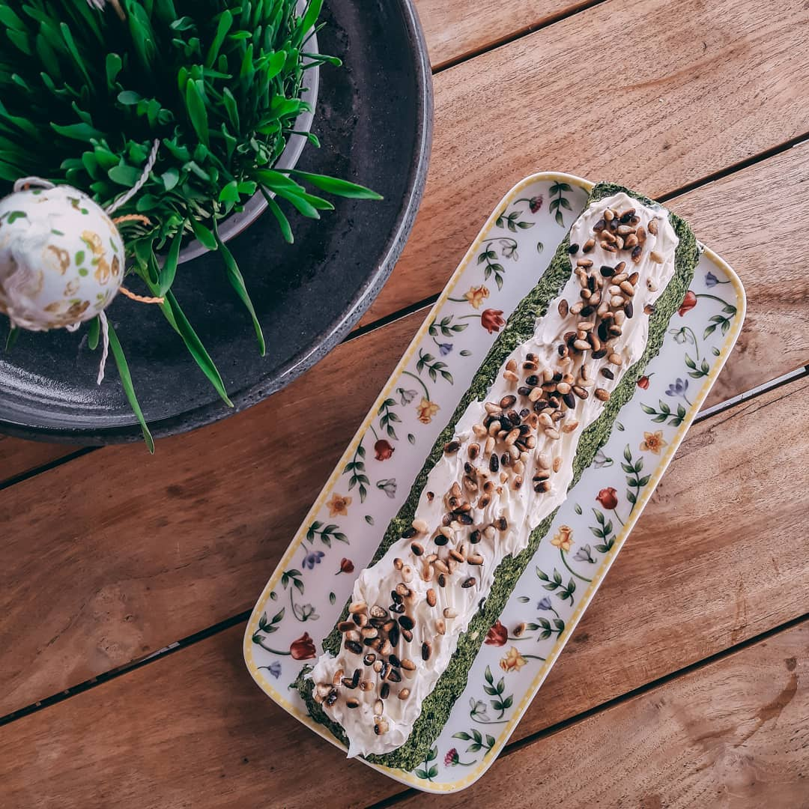

Špenátová roláda podľa @majakozlik — Normy Jedál
A když je ten zelený čtvrtek, tak nesmí chybět něco zeleného - špenátová roláda s lososem 🌱
.
.
.
#zelenyctvrtek #spinach #rolada #spenatovarolada #easter #velikonoce #food #fooddiary #foodstagram #foodlover #foodphotography